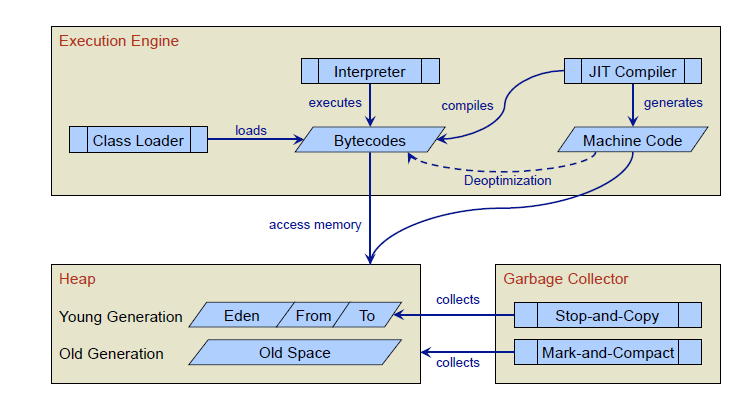

コンパイル前の動作¶
JITコンパイラ¶
JVMは、最初bytecodeをclassloaderが呼び出した後、インタプリタ実行を行う。
インタプリタ実行中にプロファイルを行い、条件を満たしたらJITコンパイルする
JITコンパイルは、コンパイラの抽象クラス経由で操作する。 コンパイラクラスは3種類ある.
C1/C2/Shark
C1コンパイラ
-clientオプション指定時のコンパイラ
コンパイル時間が短く、メモリ使用量もそこそこ。 大した最適化をしない割にそこそこ高速に動作するコードを生成するのが特徴
JVM間の比較では、ベンチマーク結果がそこそこ高い。
C2コンパイラ
-serverオプション指定時のコンパイラ。今回は扱わない。
コンパイル時間はそこそこ長く、C1より高速に動作するコードを生成する。 また、コンパイル時のメモリも大きく消費する。
詳細は、vm/opto参照。C1とは中間言語が異なり、Idealと呼ばれる中間言語。
Sharkコンパイラ
使い方はまだちゃんと調べてない。
LLVMと連携してJITコンパイルを行う. JITコンパイラをC1/C2ではなく、LLVMを使うということ。JVMの制御はそのまま。
Sharkは、method単位でBytecodeをBitcodeに変換したのち、 LLVMに渡してJITコンパイルする。
LLVMにBitcodeを渡す際に何も小細工しないので、脱仮想化とかEscapeAnalysisとかさっぱり LLVMのBitcodeにMetadataを埋め込んで、 (たとえば、このcallはこのメソッドに脱仮想化候補だとか、allocaはstack/register割り付け可能だとか) LLVMのJITコンパイラ起動時、上記metadata用最適化パスをオプションで渡せば連携できるはず。
いろいろと夢広がる。 現在は、対応アーキテクチャを増やすために使っている ex) ARM PowerPC PTX CBackend
LLVM 3.0 のReleaseNoteから、Sharkの連携やIcedTeaとの連携のことがかかれているので、 興味があるかたはLLVMのページへ
JITコンパイラが呼ばれる仕組み¶
compileBrokerがJITコンパイラを生成し、メソッド単位でコンパイルする
compiler::compile_method()
compileBroker
compiler/abstructCompiler
compile_method(ciEnv*, ciMethod*, int entry_bci)
条件を満たしたときにJITコンパイラを生成し、メソッド単位でJITコンパイルを行う。
- 条件を満たしたときに ... vm/runtime/compilationPolicy
- JITコンパイラを生成 ... vm/compiler/compileBroker
JITコンパイラは、JVMがメモリを確保して、別スレッドでコンパイルブローカーに処理を移譲する。
JVMTIを使うので、スレッドが切れていて、処理が追いにくい。
また、スレッド並列で、インタプリタと並行してJITコンパイルは走るが、
-Xbatchオプションを指定すると、JITコンパイル中にインタプリタ実行を停止することができる。
compileBroker::compilation_init()
// ------------------------------------------------------------------
// CompileBroker::compilation_init
//
// Initialize the Compilation object
void CompileBroker::compilation_init() {
_last_method_compiled[0] = '\0';
#ifndef SHARK
// Set the interface to the current compiler(s).
int c1_count = CompilationPolicy::policy()->compiler_count(CompLevel_simple);
int c2_count = CompilationPolicy::policy()->compiler_count(CompLevel_full_optimization);
#ifdef COMPILER1
if (c1_count > 0) {
_compilers[0] = new Compiler();
}
#endif // COMPILER1
#ifdef COMPILER2
if (c2_count > 0) {
_compilers[1] = new C2Compiler();
}
#endif // COMPILER2
#else // SHARK
int c1_count = 0;
int c2_count = 1;
_compilers[1] = new SharkCompiler();
#endif // SHARK
JITコンパイルの入出力¶
JVMのJITコンパイラは、ciMethodクラスが入力
compiler::compile_method()
compiler/abstructCompiler
compile_method(ciEnv*, ciMethod*, int entry_bci)
JITコンパイラの出力の形式は複数存在する。
- method->codeの書き換え
- もし書き換え対象のメソッドを今実行中だったら。。。
JITコンパイルの入り口のメソッド
CompileBroker::compile_method_base()
void CompileBroker::compile_method_base(methodHandle method,
int osr_bci,
int comp_level,
methodHandle hot_method,
int hot_count,
const char* comment,
TRAPS) {
JITコンパイルする条件¶
JVMのインタプリタ実行中にprofileを行い、 下記に示すカウンタをカウントアップする。
- invocation count
- メソッドの呼び出し回数をカウント
- backward branch count
- ループの実行回数をカウント
invocation countのカウントアップ:
bytecodeInterpreter.cpp::BytecodeInterpreter::run()
case method_entry: {
THREAD->set_do_not_unlock();
// count invocations
assert(initialized, "Interpreter not initialized");
if (_compiling) {
if (ProfileInterpreter) {
METHOD->increment_interpreter_invocation_count();
}
INCR_INVOCATION_COUNT;
if (INVOCATION_COUNT->reached_InvocationLimit()) {
CALL_VM((void)InterpreterRuntime::frequency_counter_overflow(THREAD, NULL), handle_exception);
// We no longer retry on a counter overflow
// istate->set_msg(retry_method);
// THREAD->clr_do_not_unlock();
// return;
}
SAFEPOINT;
}
if ((istate->_stack_base - istate->_stack_limit) != istate->method()->max_stack() + 1) {
// initialize
os::breakpoint();
}
//memo frequency_counter_overflowでJITコンパイラを呼ぶはず
backward branch countのカウントアップ
CASE(_goto):
{
int16_t offset = (int16_t)Bytes::get_Java_u2(pc + 1);
address branch_pc = pc;
UPDATE_PC(offset);
DO_BACKEDGE_CHECKS(offset, branch_pc);
CONTINUE;
}
CASE(_goto_w):
{
int32_t offset = Bytes::get_Java_u4(pc + 1);
address branch_pc = pc;
UPDATE_PC(offset);
DO_BACKEDGE_CHECKS(offset, branch_pc);
CONTINUE;
}
#define DO_BACKEDGE_CHECKS(skip, branch_pc) \
if ((skip) <= 0) { \
if (UseLoopCounter) { \
bool do_OSR = UseOnStackReplacement; \
BACKEDGE_COUNT->increment(); \
if (do_OSR) do_OSR = BACKEDGE_COUNT->reached_InvocationLimit(); \
if (do_OSR) { \
nmethod* osr_nmethod; \
OSR_REQUEST(osr_nmethod, branch_pc); \
if (osr_nmethod != NULL && osr_nmethod->osr_entry_bci() != InvalidOSREntryBci) { \
intptr_t* buf = SharedRuntime::OSR_migration_begin(THREAD); \
istate->set_msg(do_osr); \
istate->set_osr_buf((address)buf); \
istate->set_osr_entry(osr_nmethod->osr_entry()); \
return; \
} \
} \
} /* UseCompiler ... */ \
INCR_INVOCATION_COUNT; \
SAFEPOINT; \
}
インタプリタがprofileのカウンタを更新する様子
gdb stack trace
Breakpoint 5, NonTieredCompPolicy::reset_counter_for_invocation_event (this=0x807a738, m=...)
at /home/elise/language/openjdk6/hotspot/src/share/vm/runtime/compilationPolicy.cpp:189
189 m->invocation_counter()->set_carry();
(gdb) up
#1 0x004cbdd5 in SimpleCompPolicy::method_invocation_event (this=0x807a738, m=..., __the_thread__=0x806d000)
at /home/elise/language/openjdk6/hotspot/src/share/vm/runtime/compilationPolicy.cpp:394
394 reset_counter_for_invocation_event(m);
(gdb)
#2 0x004cba19 in NonTieredCompPolicy::event (this=0x807a738, method=..., inlinee=..., branch_bci=-1, bci=-1,
comp_level=CompLevel_none, __the_thread__=0x806d000)
at /home/elise/language/openjdk6/hotspot/src/share/vm/runtime/compilationPolicy.cpp:323
323 method_invocation_event(method, CHECK_NULL);
(gdb)
#3 0x005dafd2 in InterpreterRuntime::frequency_counter_overflow_inner (thread=0x806d000, branch_bcp=0x0)
at /home/elise/language/openjdk6/hotspot/src/share/vm/interpreter/interpreterRuntime.cpp:854
854 nmethod* osr_nm = CompilationPolicy::policy()->event(method, method, branch_bci, bci, CompLevel_none, thread);
(gdb)
#4 0x005daced in InterpreterRuntime::frequency_counter_overflow (thread=0x806d000, branch_bcp=0x0)
at /home/elise/language/openjdk6/hotspot/src/share/vm/interpreter/interpreterRuntime.cpp:826
826 nmethod* nm = frequency_counter_overflow_inner(thread, branch_bcp);
(gdb)
#5 0xb5fef92c in ?? ()
(gdb)
//interpreterのgoto命令実行時にカウントアップ
//memo OSR_REQESTマクロの中で、frequency_counter_overflow()を呼び出し
JITコンパイラが呼ばれるのは、2つのケース
対象のメソッドの呼び出し回数が規定回数以上になった場合
通常のJITコンパイル。メソッド単位でJITコンパイルする。
次回呼ばれた際にインタプリタではなく、JITコンパイルしたコードを実行する
対象のループのバックエッジの通過回数が規定回数以上になった場合
現在実行中のメソッドをJITコンパイルする。
現在実行中のメソッドなので、インタプリタからJITしたコードへ遷移するのが難しい
インタプリタ実行中からJITしたコードへ遷移する技術をOnStackReplacementと呼ぶ。
おもにsafepointを設けて(分岐の前や、分岐の集合地点)
インタプリタ実行中のFrameとJITコンパイルしたコードのFrameを記録、計算し、
遷移できるようにテーブルを作成するはず
//OnStackReplacementは、runtime/sharedRuntime.cpp::SharedRuntime::OSR_migration_begin()
//詳細は”コンパイラとバーチャルマシン”っていう書籍が図入りで説明している
JITコンパイルする際のしきい値¶
JITコンパイルのしきい値は、clientコンパイラの場合、2000回, serverコンパイラの場合、15000回のはず。
JITコンパイルのしきい値は、CompLevel で計算方法が異なるらしい
CompLevel_simple or CompLevel_full_optimization or CompLevel_limited_profile or CompLevel_full_profile
オプション:
- -XX:CompileThreshold=xxx
デフォルト:
- Tier3CompileThreshold 2000
- Tier4CompileThreshold 15000
compile_methodが呼ばれた際のstack trace
gdb stack trace
// topからdownしていきます
#6 0xb5fef92c in ?? () <-- template intepreter経由なのでこれ以上終えない
(gdb) down
#5 0x005daced in InterpreterRuntime::frequency_counter_overflow (thread=0x806d000, branch_bcp=0x0)
at /home/elise/language/openjdk6/hotspot/src/share/vm/interpreter/interpreterRuntime.cpp:826
826 nmethod* nm = frequency_counter_overflow_inner(thread, branch_bcp);
(gdb)
#4 0x005dafd2 in InterpreterRuntime::frequency_counter_overflow_inner (thread=0x806d000, branch_bcp=0x0)
at /home/elise/language/openjdk6/hotspot/src/share/vm/interpreter/interpreterRuntime.cpp:854
854 nmethod* osr_nm = CompilationPolicy::policy()->event(method, method, branch_bci, bci, CompLevel_none, thread);
(gdb)
#3 0x004cba19 in NonTieredCompPolicy::event (this=0x807a738, method=..., inlinee=..., branch_bci=-1, bci=-1,
comp_level=CompLevel_none, __the_thread__=0x806d000)
at /home/elise/language/openjdk6/hotspot/src/share/vm/runtime/compilationPolicy.cpp:323
323 method_invocation_event(method, CHECK_NULL);
(gdb)
#2 0x004cbe50 in SimpleCompPolicy::method_invocation_event (this=0x807a738, m=..., __the_thread__=0x806d000)
at /home/elise/language/openjdk6/hotspot/src/share/vm/runtime/compilationPolicy.cpp:402
402 m, hot_count, comment, CHECK);
(gdb)
#1 0x004cf34e in CompileBroker::compile_method (method=..., osr_bci=-1, comp_level=1, hot_method=..., hot_count=166,
comment=0x94b7f6 "count", __the_thread__=0x806d000)
at /home/elise/language/openjdk6/hotspot/src/share/vm/compiler/compileBroker.cpp:1084
1084 compile_method_base(method, osr_bci, comp_level, hot_method, hot_count, comment, CHECK_0);
(gdb)
#0 CompileBroker::compile_method_base (method=..., osr_bci=-1, comp_level=1, hot_method=..., hot_count=166,
comment=0x94b7f6 "count", __the_thread__=0x806d000)
at /home/elise/language/openjdk6/hotspot/src/share/vm/compiler/compileBroker.cpp:840
840 if (!_initialized ) {
InterpreterInvocationLimitとInterpreterBackwardBranchLimitの設定
void InvocationCounter::reinitialize(bool delay_overflow) {
// define states
guarantee((int)number_of_states <= (int)state_limit, "adjust number_of_state_bits");
def(wait_for_nothing, 0, do_nothing);
if (delay_overflow) {
def(wait_for_compile, 0, do_decay);
} else {
def(wait_for_compile, 0, dummy_invocation_counter_overflow);
}
InterpreterInvocationLimit = CompileThreshold << number_of_noncount_bits;
InterpreterProfileLimit = ((CompileThreshold * InterpreterProfilePercentage) / 100)<< number_of_noncount_bits;
// When methodData is collected, the backward branch limit is compared against a
// methodData counter, rather than an InvocationCounter. In the former case, we
// don't need the shift by number_of_noncount_bits, but we do need to adjust
// the factor by which we scale the threshold.
if (ProfileInterpreter) {
InterpreterBackwardBranchLimit = (CompileThreshold * (OnStackReplacePercentage - InterpreterProfilePercentage)) / 100;
} else {
InterpreterBackwardBranchLimit = ((CompileThreshold * OnStackReplacePercentage) / 100) << number_of_noncount_bits;
}
ちなみに、clientの場合
InterpreterInvocationLimit = 12000
InterpreterBackwardBranchLimit = 111960
serverの場合
InterpreterInvocationLimit = 80000
InterpreterBackwardBranchLimit = 10700
clientコンパイラのしきい値って、メソッド呼び出しが1500回で、OnStackReplacementが14000回じゃないの？